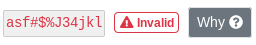
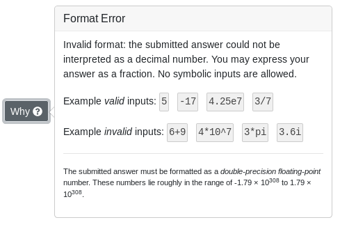
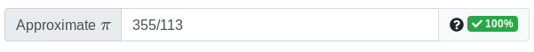

More feedback for invalid input and submissions has been added. When an answer has been submitted that PrairieLearn cannot understand, your answer will not be graded (meaning that it will not count as an attempt), and the answer will be marked invalid. 
Clicking on the Why button will give more information on why the answer couldn't be understood, including some example answers that are valid and invalid. 
You can also now express answers as fractions for questions that expect decimal answers. For example, the following is now valid: 